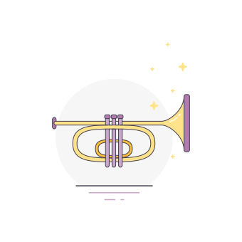
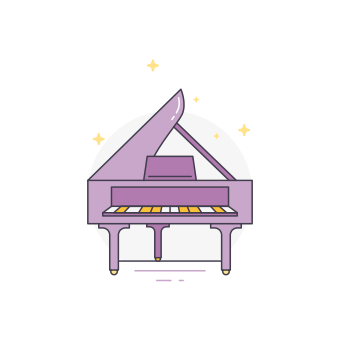

<md-input-container class="full-width">
    <input type="text" placeholder="{{'conservatory.find' | translate | upperFirstLetter}}"
           ng-model="$ctrl.filter"
           ng-model-options='{ debounce: 500 }'
           ng-change="$ctrl.searchConservatory()">
</md-input-container>

<div class="search-bar">
    <md-select ng-model="$ctrl.criteria.key" class="search-select"
               placeholder="{{'sortBy' | translate | upperFirstLetter}}">
        <md-option ng-repeat="currentCriteria in $ctrl.criterias" ng-value="currentCriteria"
                   ng-click="$ctrl.getDataInCurrentPage()">
            {{'conservatory.' + currentCriteria | translate | upperFirstLetter}}
        </md-option>
    </md-select>

    <md-button class="md-icon-button"
               ng-click="$ctrl.changeOrder()">
        <md-icon md-font-set="material-icons" ng-if="$ctrl.criteria.order === 'asc'">
            call_made
        </md-icon>
        <md-icon md-font-set="material-icons" ng-if="$ctrl.criteria.order === 'desc'">
            call_received
        </md-icon>
    </md-button>
</div>

<div class="md-title" ng-if="$ctrl.totalItems === 0">No result</div>
<md-content>
    <md-list ng-if="$ctrl.totalItems > 0">
        <md-list-item class="md-3-line" ng-repeat="conservatory in $ctrl.conservatories">
            <div class="md-list-item-text">
                <h5 class="conservatory-name">{{conservatory.name}}</h5>
                <span>{{conservatory.zip}}</span>
                <span>{{conservatory.city}}</span>
            </div>
            <md-button class="md-secondary md-icon-button"
                       ng-click="$ctrl.openDetails($event, conservatory)">
                <md-icon md-font-set="material-icons"
                         aria-label="{{'coordinates' | translate}}">
                    location_on
                </md-icon>
            </md-button>

            <md-divider ng-if="!$last"></md-divider>
        </md-list-item>
    </md-list>
</md-content>
<md-button class="md-icon-button pagination-btn" ng-click="$ctrl.previousPage()"
           ng-if="$ctrl.currentPage > 1">
    <md-icon md-font-set="material-icons">keyboard_arrow_left</md-icon>
</md-button>
<md-button class="md-icon-button pagination-btn" ng-click="$ctrl.nextPage()"
           ng-if="$ctrl.currentPage < $ctrl.pageCount">
    <md-icon md-font-set="material-icons">keyboard_arrow_right</md-icon>
</md-button>
<div class="images">
    
    
</div>
